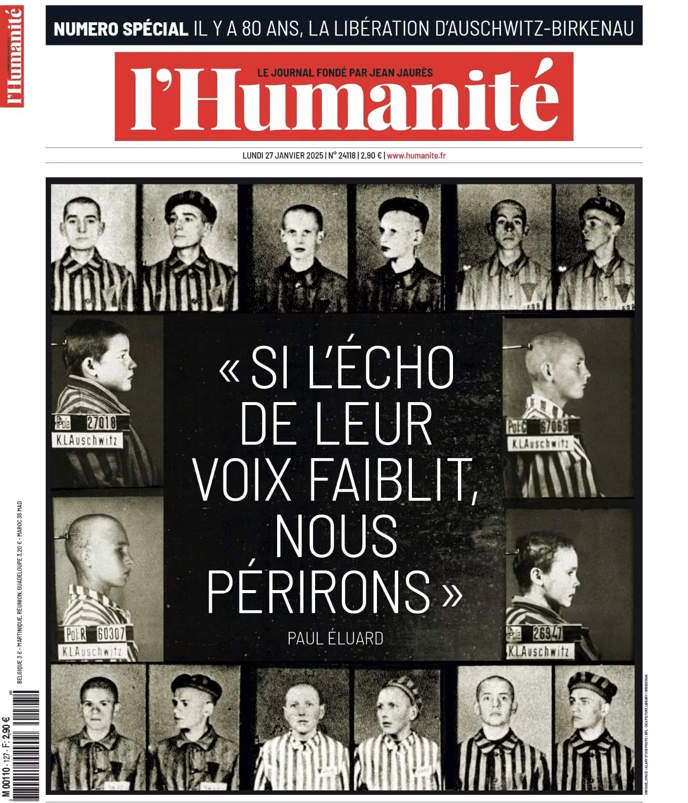
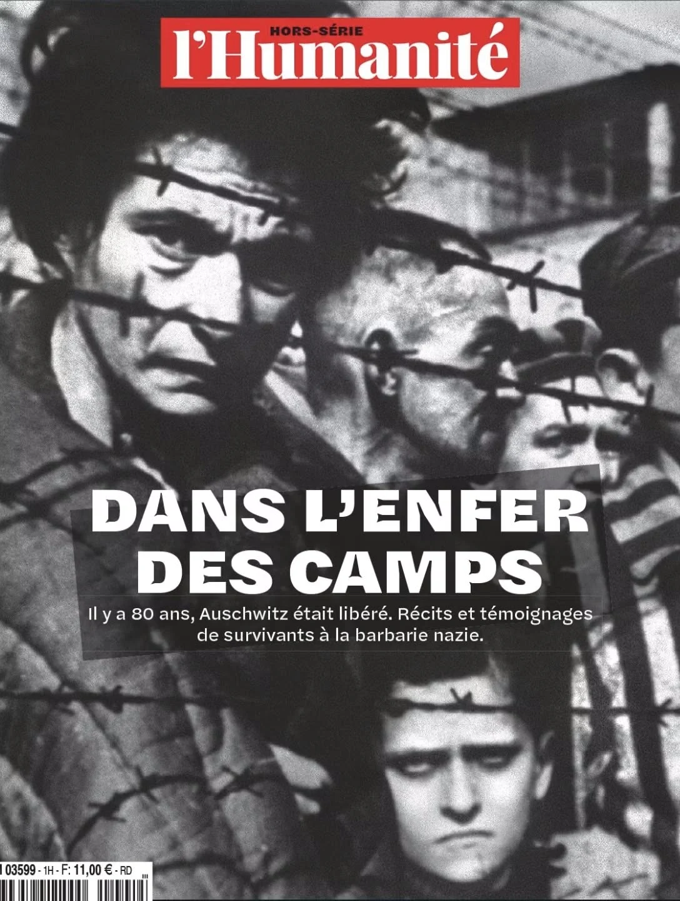

Commémoration relayée
Auschwitz-Birkenau. Fabien Gay marque les 80 ans de la libération du camp
Date de mise à jour indiquée par Facebook · 27 janvier 2025
Repères éditoriaux
Le 27 janvier 1945, l’Armée rouge libérait Auschwitz-Birkenau. Le musée d’Auschwitz-Birkenau estime qu’environ 1,1 million de personnes ont péri à Auschwitz, dont environ un million de Juifs. Nous avions relayé l’hommage de Fabien Gay et l’annonce du hors-série de L’Humanité fondé sur des témoignages de survivants. Le périmètre du chiffre global indiqué dans la publication d’origine reste à documenter.
Texte de la publication · Fabien Gay
Il y a 80 ans, les soviétiques libéraient le camp d’Auschwitz-Birkenau.
Plus de 9 millions de Juifs, tziganes, résistants, homosexuels ont péri dans l’enfer des camps, tués par la barbarie nazie.
Pour ce 80eme anniversaire, l'Humanité publie un hors-série pour retracer l’horreur, à partir de témoignages des survivants.
L’antisémitisme, la montée de l’extrême droite et les idées de la haine sont toujours présents. N’oublions jamais.
Mon édito dans ce hors-série à lire dans le 1er commentaire


Sources
Fabien Gay · publication relayée par le PCF 79 · bibliothèque Facebook · AR-0002-FB-01203
À lire aussi · Fin des camps nazis. La Fondation Gabriel Péri annonce un hommage le 28 avril